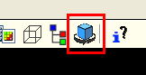
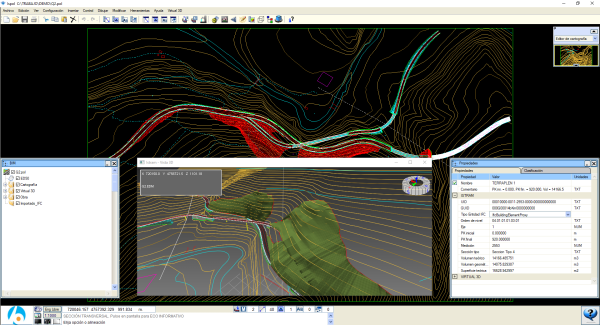
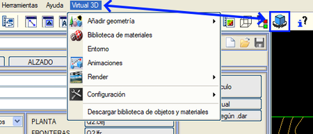

| |
|
SANAL 3B: Çalışma Ortamı
|
|
SANAL 3B Modülüne Erişim Sanal 3B modülüne erişmek için, ana araç çubuğunun sonuna doğru bulunan butona tıklanmalıdır. ISTRAM®BIM'in en son sürümünü ve LIBSOL kütüphanesini yüklediğinizden emin olun. SANAL 3B Arayüz Elemanları Çalışma ortamı, birbirinden net bir şekilde ayrılmış üç alana bölünmüştür:

Çalışma Alanının Temel İşleyişi Uygulamanın üç ana elemanı, boyutu değiştirilebilen grafik pencerelerde çalışır (birbirine bağlı oldukları için her bir pencerenin boyutu otomatik olarak ayarlanır). Fareyi herhangi bir kenarın üzerine getirdiğinizde, imlecin görünümü değişir ve her bir alanı yatay ve dikey olarak yeniden boyutlandırmak mümkün olur. Ayrıca, Sanal 3B penceresi Istram penceresinden tamamen bağımsızdır. Boyutu değiştirilebilir, ekranı kaplayabilir veya simge durumuna küçültülebilir; hatta ana pencerede ISTRAM® ile çalışmaya devam ederken, tam ekran görmek için ikinci bir monitöre taşınabilir. Tüm grafik alanını simge durumuna küçülterek, ISTRAM®BIM'in diğer modüllerinden herhangi birinde bir görev gerçekleştirmek için bir 'duraklama' yapılabilir. Sanal ortam, 2B ortamla otomatik olarak iletişim kurar: Haritada veya sayısal arazi modelinde yapılan herhangi bir değişiklik, 'odak' aldığında veya tekrar ISTRAM®BIM'in 'aktif' penceresi haline geldiğinde dikkate alınır. Ancak, Sanal 3B penceresinin 3B geometrisini değiştirmek için BIM modelini yeniden oluşturmak gerekir. Modülden çıkmak için Sanal 3B penceresini kapatmak yeterlidir. Ana Menü Modülün ana işlevleri, Sanal 3B menüsü içindeki uygun seçeneğe tıklanarak erişilen çeşitli çalışma alanlarında gruplandırılmıştır. Bu alanlar şunlardır: 
|